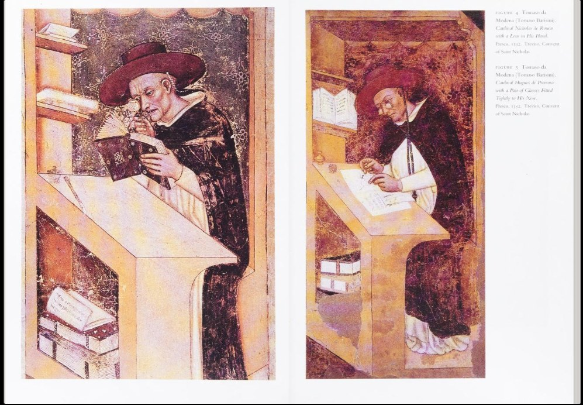
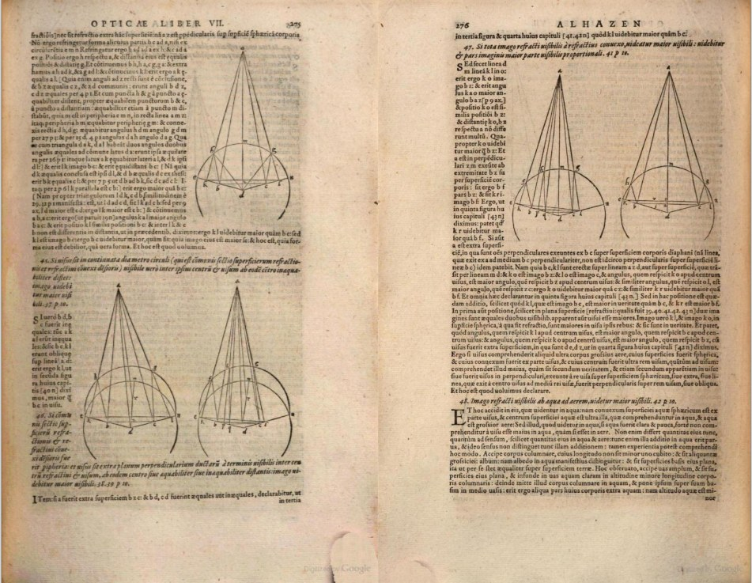
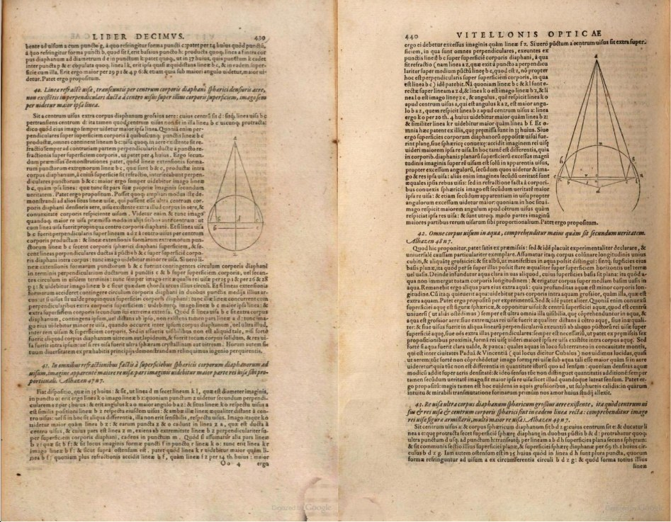

Opening Statement: Companion to Probability of a Lost Force Law — SOVRA Artifact Gallery
From the earliest recorded mathematics — the Ishango Bone and Lebombo Bone of Africa, tens of thousands of years old — to everyday modern technology like eyeglasses and the USB connector, human history is full of contested origins: who actually discovered or invented something, and who got the credit. TraceForm Analytics exists to work that contest the only way that holds up: by going into the archives themselves and finding what the record actually supports.
TraceForm does not ask why these contests exist — that answer changes case by case, and guessing at it isn't the instrument's job. What it addresses is narrower and more useful: what's probable, what's confirmed, what remains open, and what can't be settled by evidence at all.
Every Trace TraceForm runs — this one and every one after it — operates under a governing constraint: NFIE, the Non-force Inertia Equation (O_f = 0). This does not mean TraceForm is neutral. It isn't, and it doesn't claim to be — its stated purpose is to find and expose a specific pattern, not to sit above the question. What NFIE guarantees is narrower and, I'd argue, more honest: nothing gets inserted into a finding to make it land somewhere it wouldn't land on its own, and nothing gets withheld to keep a finding from landing somewhere inconvenient. An observational posture is not the same thing as neutrality, and I am not claiming the second. What I am committing to is that I will not knowingly insert false or misleading information into this or any Trace — including when the truth is less satisfying than the theory, and including when it cuts against what I expected or wanted to find going in.
For this Trace, I used the invention of eyeglasses as a calibration case — a real test of how TraceForm functions, both in method and in its limits. Eyeglasses are a good test precisely because the record is incomplete in an interesting way: we can trace the theory that likely made them possible across three centuries and two continents, but the actual inventor's name never made it into any surviving document. That gap, and what it does and doesn't tell us, is the subject of what follows.
Stone Cold Open
A tombstone. Sitting in the middle of what is quite possibly one of the most needed, and one of the most taken for granted inventions in history. The eyeglasses. This tombstone is a false flag, a red herring. In the view of this analyst, it is also quite possibly one of the most blatant false reports in history. This Trace does not investigate why it was created as such. Intent is not the purpose of TraceForm Analytics. The purpose here is to find what the archives, the histories, and the reports have to say. What can be confirmed, what can be pointed out as false, and what can be pointed out as genuinely open to further investigation. To that end, when I found this tombstone, my first thought was "Okay, this just might be it". Turns out that I was wrong. That was not it.
Salvino d'Armato degli Armati was largely and continuously credited with the creation of eyeglasses for quite a long time. Then I found the exposure. Isidoro Del Lungo — in 1920, 236 years after the story first appeared in print — proved the whole thing was fabricated. The myth survived anyway, in scattered corners, for another 75 years after that. Again, TraceForm is not here to establish intent. What the archive shows is different than what the tombstone shows. What the path of optics-related work shows is vastly different than the claims made about the invention.
The Silent Witness
We have a witness though, or at least a man claiming to be a witness. What I would give to go back in time and question the man myself! Did he really meet the silent inventor? That, like the amount of licks it takes to get the center of a Tootsie Roll sucker, the world may never know. The inventor's name is still elusive to this day. It could be because some archive somewhere never thought to publish it, or it could still be a closely guarded secret to this day. Either way, the archives surrounding this are unclear and silent on the name Giordano da Pisa did not seem to speak. Could it exist in other archives? Possibly. This trace could not find them.
So just who was Giordano da Pisa? A preacher. A scholar. A learned man. He was by no means a slouch that I could tell. This Trace is not here to establish the intent of a sermon. It is, however, here to establish credibility in some narrow aspects.
"Non è ancora venti anni che si trovò l'arte di fare gli occhiali, che fanno vedere bene, ch'è una delle migliori arti e delle più necessarie che 'l mondo abbia, ed è così poco che si trovò: arte novella che mai non fu. E disse il lettore: Io vidi colui che prima la trovò e fece, e favellaigli."
("It is not yet twenty years since the art of making eyeglasses was found, which make one see well — one of the best and most necessary arts the world has, and so recently found: a new art that never existed before. And the reader said: I saw the one who first found and made it, and spoke with him.")
There we have it. Plain as day. The Claim. This Trace could not locate an earlier claim than that, and that claim has other claims calibrated against it. This puts the anchor date around approximately 1285–1286 A.D. A separate check — searching for any pre-1285 artwork or artifact anywhere depicting a worn lens device — also came back empty. Neither result proves the other, but together they hold: nothing found anywhere, in any form by this Trace, pushes this date earlier.
The Guarded Name
So why hide it? This Trace does not investigate why. That is not the job. But something changed between the sermon and the next name that shows up in the record, and it is worth looking at plainly.
Here we have the second time the name of the inventor is left out of the record. Now, normally 1 or 2 incidents of omission might be a coincidence. That's the thing about the archives though, 1 or 2 is often the complete pattern.
Enter Alessandro Spina. A friar, same convent as Giordano — Santa Caterina, Pisa. Died 1313. Decades after the sermon. Not the inventor. Keep that straight, because history has tried to make him one, and the record itself says otherwise.
Did he read the sermon, or have it recited? We don't know. We do know they were part of the same order, the same convent. Logic here allows for the questions to be asked.
Here is what the Pisan chronicle actually says, in the friars' own words:
"Frater Alexander de Spina, vir modestia et bonus, quaecumque vidit aut audivit facta, scivit ea facere. Ocularia, ab aliquo primo facta, et comunicare nolente, ipse fecit et comunicavit, corde ylari et volente."
("Brother Alexander Spina, a modest and good man, knew how to make whatever he saw or heard had been made. Eyeglasses, having first been made by someone who was unwilling to share the technique, he made himself and shared, gladly and willingly.")
Read that again. Someone made them first. That someone would not teach anyone how. Spina figured it out on his own, and then he gave it away for free. That is not a discovery story. That is a story about a man who did something that was uncouth. He took what he saw and did not ask for permission to use or proliferate it that this Trace could determine.
This Trace is not here to say why the first maker kept the secret. Craftsmen guarded trade techniques for a hundred reasons that had nothing to do with malice — a living, a guild, a family's only edge. What this Trace can say is that the pattern is documented, in the friars' own chronicle, by name, decades before anyone thought to build a myth around a tombstone. The silence was not empty. Somebody was standing in front of it on purpose.
And here is the part almost nobody tells you: even Spina, the man who gave it away, later got mistaken for the man who invented it. Some accounts still credit him as first. The chronicle that names him says the opposite, in the same sentence. Even the man who broke the secrecy did not escape having credit rewritten out from under him.
The Frame, Not the Lens
So, what makes a spectacle out of the history of spectacles? Let's look at some artwork I did find in the course of this Trace. Two old dudes in some fancy robes surrounded by books and papers and stuff and things. The Tomaso da Modena fresco (1352).

In this fresco, we see the reading stone and the spectacles in use, side by side, during the same era. What that is, is the transition being shown in real time. Think of it like looking at someone using normal glasses side by side with someone using smart glasses today. See, the optics work existed long before the actual invention did. This led me to figure out that it's the frames that make the spectacles. Think about it. When people go shopping for glasses, whether they be sunglasses in a gas station or prescription glasses at the doctor's office, it is often about how the frames make us look.
So the invention of spectacles was not the invention of the lenses. It was the hands-free frame that made them spectacles at all.
The First Mix-Up
Before we even get to Italy, there's a mix-up in the story that has nothing to do with tombstones or forgers. Long before Alhazen wrote a word, a mathematician named Ibn Sahl had already worked out the math for bending light through curved glass — bending, not just reflecting. That's around 984, give or take. Alhazen came along roughly a generation later and built the bigger, more famous book on top of it.
Here's the part that made me sit up: a completely different work, on twilight and the thickness of the atmosphere, written by a man named Ibn Muʿādh al-Jayyānī, got filed under Alhazen's name for centuries in Latin translation. Wrong author, right field, close enough in time that nobody caught it for a long, long while.
It's easy for people to miss a name. What needs to be understood here is that scientific methods were different way back then. Source citations, crediting the previous theorists, making sure credit survived was not always at the top of the list like it is today. Hell, most of the science back then was not even recognized as science. Think about it. 1,000 years ago most scientific knowledge was not even thought of as "science" as we know it now.
So the very first name confusion in this whole Trace didn't happen in Renaissance Florence, and it didn't happen to a European. It happened inside the Islamic scientific tradition itself, one scholar's real work getting stapled to a more famous man's name. Credit getting tangled up isn't a habit anybody invented. It's just a habit.
The Wrong Suspect
Before Salvino ever got carved into a stone slab, there was another name floating around as a possible translator of Alhazen's optics into Latin: Gerard of Cremona, a prolific translator working out of Toledo. Made sense on paper — the man translated an enormous amount of Arabic science into Latin in his lifetime. See that, he translated a lot of stuff from Arabic into Latin. From what many people mistakenly call “The Middle East” into European languages.
Except he didn't do this one. A scholar named George Sarton put his own name on that theory in 1938, then went back and corrected himself, in print, when the evidence didn't hold up. Gerard did translate a different work on twilight — just not the optics.
This analyst finds it important to show self-correction. The fact that Sarton went back and made the correction is an important finding in this Trace.
There's a second wrong suspect in this same window of years, and this one matters more — because it isn't an honest mistake. It's the reason we ended up with a forged tombstone at all.
Francesco Redi, a physician and scholar of real standing in Florence, got hold of the Pisan chronicle's account of Alessandro Spina sometime around 1673. That chronicle says Spina saw eyeglasses somebody else had already made, and figured out how to build them himself, with his own eyes. The version Redi sent to a fellow scholar, Carlo Dati, on 26 February 1674, quietly changes "with his own eyes" to "saw or heard" — and drops the one sentence in the whole record that names a witness who actually met the original inventor. The effect: Spina stops looking like a man who reverse-engineered someone else's secret, and starts looking like the man who invented it. Pisa's man, not an anonymous one.
That's not a citation slip. That's an edit to the source text itself. And it planted a flag for Pisa.
Ten years later, in 1684, a Florentine writer named Ferdinando Leopoldo Del Migliore answered that flag with one of his own: a fabricated epitaph for a Florentine gentleman named Salvino degli Armati, citing a burial register nobody but him ever laid eyes on. That epitaph is the tombstone this Trace opened with.
So the wrong suspect that ended up carved in stone didn't come out of nowhere. It came out of a fight between two cities over whose name got to sit in an empty credit slot, and Redi swung first. Nobody caught what he'd done — not honestly, not the way Sarton caught his own mistake — for 236 years, until Isidoro Del Lungo went back to the original documents in 1920 and proved both sides of the fight had been altered.
I'm bringing this up in the same section as Gerard of Cremona because it starts with the exact same instinct: find a name, attach it to an unsolved credit, move on. The difference is where that instinct led each man. Sarton's mistake was honest, and he corrected it himself, in print, the same way he made it. Redi's wasn't a mistake — it was made on purpose, to win a fight for his own city's name, and it took someone else's work and 236 years to catch it. Not every wrong guess turns into a forged tombstone. But when one does, this is what it looks like from the inside.
The Photonic Realization
Lenses you ask? Lenses I answer. Abu Ali al-Hasan ibn al-Hasan ibn al-Haytham — Latinized down to something easier on Western tongues: Alhazen. Working out of Cairo (Africa) in the early 1000s, he wrote the Book of Optics, seven books explaining how light actually enters the eye and bends through a curved surface — the actual math the lenses run on. Two and a half to nearly three centuries before anyone in Italy figured out how to wear the things, the theory was already sitting on a shelf, fully worked out, by a scholar of the Islamic Golden Age. That's not a footnote. That's the foundation this whole Trace is standing on.
From there it got translated into Latin, as De aspectibus, and it got read. Really read. By a man who opened his book calling himself "filius Thuringorum et Polonorum," son of Thuringians and Poles. History mostly just calls him Witelo.
And here's where I have to eat my own words. When I started this Trace, I had Witelo down as the clean part of the story, the part where credit worked the way it's supposed to. Then I read his book.
Page 440, Book Ten, proposition 42: to show that things look bigger underwater, take a white column one cubit long, stand it in a flat-bottomed vessel of clear water. Now turn to page 276, Alhazen, Book Seven, proposition 48. Same column. Same cubit. Same white, "because white shows up better in water." Same exception for clear, shallow water. Near word for word. Witelo drops in something of his own, a cave between Padua and Vicenza where he saw water "as clear as air," and then introduces the whole thing with "what is proposed here is clear enough from what has gone before." Alhazen's name? Nowhere. Not on that page, not anywhere in ten books. The only nod to his Arabic source in the entire work is one line in the preface: "the tedium of Arabic wordiness."


To be fair, and NFIE says I have to be, Witelo did real work of his own. Rainbows at Viterbo, four of them at once over Padua, observations this Trace attributes to Witelo. (Perhaps one could say he was Reading Rainbows.) And in everything I found, he never claimed Alhazen's discoveries as his own discoveries. He just never said whose they were. This analyst files that as an Rc⁻ event: the knowledge made the trip, and the credit didn't.
So the line from Cairo to Italy holds. Witelo was in Padua by 1262, at the papal court in Viterbo in 1277, and by his own account, the love of this study first took hold of him near Padua. What didn't make the crossing was the name. It took a German editor, Friedrich Risner, in 1572, three hundred years later, to put Alhazen's name back beside Witelo's work. And Risner admitted he couldn't even work out when Alhazen lived.
So both halves of this story lost a name. The craftsman lost his entirely: an unmarked grave, a fake tombstone, a guarded secret. The theorist lost his at the border, the moment his work crossed into Latin Italy. Same object. Two different kinds of silence. One was a secret kept. The other was a name left off the page.
Don't believe what you're reading here? Good. Go look yourself. Page 276 and page 440 are both online, the sources are listed, the archives are named, and none of this required taking this analyst's word for it — that's the whole point of NFIE. So if seeing is believing, take a look in a book, or a report like this one.
This Trace traced a path through history that most people never think to ask about, and it turns out that path runs straight through Cairo before it ever gets to Italy. Worth sitting with, next time somebody reaches for their glasses without giving it a second thought.
The Second Reader
Witelo wasn't the only one reading this stuff. Over in England, around the same decades — the 1250s to 1270s — a scholar named John Peckham had his hands on the same Latin text, De aspectibus. Different country, different reader, same book making the rounds.
Why's that worth a mention? Because it means Witelo wasn't some isolated case of one guy in Italy stumbling onto obscure material nobody else had access to. This text was circulating widely enough that two scholars, in two different countries, were both working from it around the same window of time. That's not a rumor moving through one narrow channel. That's a real, documented spread. It makes the Italy chain look less like a fluke and more like exactly what you'd expect from a text that had already made it into general academic circulation by the time Witelo picked it up.
Full Circle in Florence
Here's a detail I didn't expect to find funny, but I do. The same city that built a fake tombstone to a fake inventor — Florence — is also the city where the real theory kept getting read, generation after generation, by people who had nothing to do with the eyeglasses myth at all.
Around the 1450s, a sculptor named Lorenzo Ghiberti cites an Italian translation of that same optics text in his own writing. Decades later, in 1494, Luca Pacioli — yes, the math guy, the one who basically wrote the book on double-entry bookkeeping — mentions reading Witelo's Perspectiva in the library at San Marco. And about ten years after that, Leonardo da Vinci, in his own notebooks, confirms the same book was sitting in that same library.
None of these three have anything to do with the invention of spectacles. They're too late, decades and decades too late, to matter for the 1285 date. But they tell you something else: the real theoretical work behind the lenses wasn't some obscure text that vanished after Witelo finished with it. It sat in a Florence library for over two centuries, and serious people — an artist, a mathematician, arguably the single most famous mind of the Renaissance — kept pulling it off the shelf. The theory had a long life, but it lived it under Witelo's name. The invention myth had to be forged outright. Two different ways to lose the one who did the work, sitting in one city, in one library, for two hundred years.
The Honest Dead End
So here's where this Trace stops, and I'm not going to dress that up as something it isn't.
We know the theory. Alhazen wrote it, Witelo carried it, Italy had it in hand decades before anyone wore a lens. That part's locked. We know the craft came later, in the Pisa region, around 1285 or 1286, and that whoever made it first didn't want anyone else knowing how. We know Spina broke that silence, and got his own credit stolen for the trouble. We know the tombstone is a lie built almost four hundred years after the fact, and we know exactly who built it and when.
What we don't know, and may never know, is a name.
This is an item this Trace could not locate in the archives. If that information ever existed as a documented fact, it may have been deliberately withheld as a guarded technique rather than lost by accident — the Pisan chronicle's own account of Alessandro Spina describes exactly that pattern, for eyeglasses specifically. No surviving institution or archive is known to hold the original maker's identity. This finding stays open, and it may be permanently unresolvable absent a future archival discovery — not merely unconfirmed pending someone coming forward.
I'm not going to manufacture a candidate to close that gap out. That would be the easy version of this report, and it would also be the dishonest one. NFIE doesn't let me insert something because a finished-feeling ending would read better. It also doesn't let me bury the gap or wave it off as unimportant. So it stays here, in plain sight, exactly as unresolved as the archives actually leave it.
What this Trace can say, without hedging: two names went missing on the way to your glasses. One we got back. Alhazen's was restored by an editor three hundred years late who couldn't say when the man had lived. The other never made it onto any surviving page at all, not because nobody wrote it down, but very possibly because somebody, on purpose, made sure nobody could.
If seeing is believing, then somewhere out there is a page this Trace never found, with a name on it that's been waiting seven hundred years to be read. Until then, this is where the archive ends, and this is where TraceForm Analytics stops with it.
Section 1 — Characters and Locations
Ancient/Medieval Islamic World
| Name | Location | Role |
|---|---|---|
| Ibn al-Haytham (Alhazen) | Basra → Cairo (Fatimid Caliphate) | Author, Kitāb al-Manāẓir (Book of Optics), composed c. 1011–1021 during house arrest in Cairo; d. c. 1040, Cairo |
| Ibn Sahl | Location not independently confirmed in this research | Author, On Burning Mirrors and Lenses, c. 984 CE — earliest confirmed theory-to-lens-shape mathematics; predates Alhazen |
| Ibn Muʿādh al-Jayyānī | Al-Andalus (Islamic Spain) | Actual author of De crepusculis — the work later misattributed in print to Alhazen |
| Kamal al-Din al-Farisi | Persia | Author, Tanqīḥ al-Manāẓir (c. 1309); cites a manuscript copy of Alhazen's work made in Rajab 419 AH / July 1028 CE, within Alhazen's own lifetime |
Latin Translation Chain
| Name | Location | Role |
|---|---|---|
| Gerard of Cremona | Toledo, Spain (Cremona-born) | Translator; ruled out as translator of Alhazen's optics by Sarton's 1938 self-correction; did translate the unrelated De crepusculis |
| (Unknown translator) | Unknown — terminus ante quem via England | Produced the actual Latin De aspectibus, in circulation by the 1250s–70s |
| John Peckham | England | One of two scholars (with Witelo) confirmed familiar with the Latin De aspectibus by the third quarter of the 13th century |
The Italy Chain (§D.1's live thread)
| Name | Location | Role |
|---|---|---|
| Witelo | Padua, Italy — 1262, primary-text verified: his own treatise De natura daemonum reports an event that "happened in Padua in the year of the Lord 1262," and its colophon names him studens in iure canonico (student of canon law) (Birkenmajer 1921 — Section 2, #21). Padua teaching post 1262–1268 is secondary (Studium Parisiense, #8), not yet checked against a primary source. Viterbo, Italy (1277, archivally confirmed Papal Curia presence). In his own Perspectiva (#24), Witelo places his optical study in Italy: clear water in a cave between Padua and Vicenza, and hot sulphurous springs where "the love of this study first drew us in" (X.42); a rainbow at a waterfall near Viterbo that was "the beginning of our thinking" for the work (X.67). Calls Poland "our land" (X.74) | Author, Perspectiva — substantially based on Alhazen's optics (Vescovini; Lindberg; Risner's 1572 concordance), but never names Alhazen in it (#24; Section 4). Written at the urging of William of Moerbeke and dedicated to him (Witelo's own preface) |
| William of Moerbeke | Viterbo, Italy (confirmed present, translating, Nov. 22, 1267) | Flemish Dominican translator; recipient of Witelo's dedicated Optics per Vescovini's citation |
The Invention (TCA-2, previously closed)
| Name | Location | Role |
|---|---|---|
| (Anonymous inventor) | Likely Pisa region, Italy | Actual inventor of eyeglasses, c. 1285–86; identity lost — per Rosen's verdict: not a Dominican, probably not a cleric, definitely not a Florentine |
| Fra Giordano da Pisa | Florence (sermon delivered), Pisa (friar's origin) | Primary contemporary witness; 1306 sermon states spectacles invented "not yet twenty years" earlier, names having personally spoken with the maker |
| Alessandro (della) Spina | Santa Caterina convent, Pisa | Friar, same convent as Giordano; d. 1313. Not the inventor — per the Pisan chronicle, reverse-engineered eyeglasses after seeing a pair someone else had made and would not teach, then shared the technique freely. Later mistakenly credited as the inventor by some accounts despite the chronicle stating the opposite; also the figure Redi's 1674 forgery was built around |
| Salvino degli Armati | Florence | Fabricated — the false attribution later invented and inscribed |
| Redi, Del Migliore, Manni | Florence | The three forgers (1674, 1684, 1738) who constructed the Salvino myth |
| Edward Rosen | Modern scholar | Established the forgery chain and the negative verdict on the inventor's identity |
Later Reception (confirmed, but ~165–220 years too late to bear on 1285)
| Name | Location | Role |
|---|---|---|
| Lorenzo Ghiberti | Florence, ~1450s | Cites an Italian vernacular translation of De aspectibus in Commentario III |
| Luca Pacioli | Florence (San Marco convent library) | Cites reading Witelo's Perspectiva there, in his Summa (1494) |
| Leonardo da Vinci | Florence (San Marco) | Corroborates same holding, Codex Arundel, c. 1504–1505 |
| Friedrich Risner | Basel, 1572 | Editor of the Opticae thesaurus, the first printed edition of Alhazen, bound with Witelo. Added the Alhazen↔Witelo cross-reference tags. States in his own preface that he could not learn when Alhazen lived, and guessed c. 1100 (about a century late) |
Section 2 — Primary Source Documents
Vescovini, Graziella Federici. Studi sulla prospettiva medievale. Turin, 1964. Internet Archive: https://archive.org/details/studisullaprospe0000graz
Sarton, George. "Query no. 76 — The tradition of the optics of Ibn al-Haitham," Isis XXIX (1938), pp. 403–406. Internet Archive identifier: sim_isis_1938-11_29_2
al-Farisi, Kamal al-Din. Kitāb tanqīḥ al-manāẓir li-dhawī al-abṣār wa-al-baṣā'ir. v.1 HathiTrust: https://catalog.hathitrust.org/Record/002077759
Molinier, Émile (ed.). Inventaire du trésor du Saint-Siège sous Boniface VIII (1295). Paris, 1888. HathiTrust: https://catalog.hathitrust.org/Record/100372858
Grabmann, Martin. Guglielmo di Moerbeke, O.P., il traduttore delle opere di Aristotele (= I Papi del Duecento e l'Aristotelismo, II). Miscellanea Historiae Pontificiae, vol. XI. Rome: Pontificia Univ. Gregoriana, 1946. Internet Archive (access-restricted): https://archive.org/details/miscellanea-historiae-pontificiae_1946_11
Mansion, Auguste. Review of Grabmann, I Papi del Duecento e l'Aristotelismo II. Revue Philosophique de Louvain, 3rd series, tome 46, n°9 (1948), pp. 119–122. Persée: https://www.persee.fr/doc/phlou_0035-3841_1948_num_46_9_5135_t1_0119_0000_1
— Confirms, via a cited manuscript colophon (Millás Vallicrosa, Toledo MS 47-12), that Moerbeke completed a translation of Themistius's paraphrase of De Anima at Viterbo, on November 22, 1267. Does not mention Witelo.
Paravicini Bagliani, Agostino. "Witelo et la science de l'optique à la cour pontificale de Viterbe (1277)." Mélanges de l'École française de Rome — Moyen-Âge, Temps modernes, tome 87, n°2 (1975), pp. 425–453. Persée: https://www.persee.fr/doc/mefr_0223-5110_1975_num_87_2_2334
— Abstract states: discovery of the first archival document attesting Witelo's presence at Viterbo, the temporary seat of the papal Curia; permits a new chronology of his relations with the Curia.
Studium Parisiense — biographical database entry on Witelo (Padua teaching post, 1262–1268; citing Patar, Dictionnaire des philosophes médiévaux, p. 549). http://studium-parisiense.univ-paris1.fr/individus/12350-witelo
Fra Giordano da Pisa (da Rivalto), sermon of 23 February 1305/1306, Florence. Found in multiple independent 18th–19th-century printings, cross-confirmed word-for-word. Full clause: "Non è ancora venti anni che si trovò l'arte di fare gli occhiali, che fanno vedere bene, ch'è una delle migliori arti e delle più necessarie che 'l mondo abbia, ed è così poco che si trovò: arte novella che mai non fu. E disse il lettore: Io vidi colui che prima la trovò e fece, e favellaigli." ("It is not yet twenty years since the art of making eyeglasses was found... a new art that never existed before. And the reader said: I saw the one who first found and made it, and spoke with him.") Published text: Narducci, ed., Tre prediche inedite del beato Giordano da Rivalto (Rome, 1857), pp. 22–23 — https://archive.org/details/bub_gb_eS-OY4qEbbwC Independent printing citing the same clause: Redi, Opere (1809 ed.) — https://archive.org/details/bub_gb_zrKzVL8CTTIC
Fra Domenico da Peccioli, chronicle of Santa Caterina, Pisa (cited by Muratori, Antichità italiane, dissertation XXIV). The passage on Alessandro Spina: "Frater Alexander de Spina, vir modestia et bonus, quaecumque vidit aut audivit facta, scivit ea facere. Ocularia, ab aliquo primo facta, et comunicare nolente, ipse fecit et comunicavit, corde ylari et volente." ("Whatever he saw or heard had been made, he knew how to make. Eyeglasses, having first been made by someone else who was unwilling to share [the technique], he himself made and shared, gladly and willingly.") Reproduced in Narducci's edition (see #9 above), p. 23 note.
Sourcing note: a 2025 popular work, Marc Vittorini's OCCHIALI (La storia e la tecnologia delle cose, vol. 12), was retrieved during the same search pass and corroborates the standard narrative (Alhazen → Latin translation → Duecento Italy → Giordano's sermon → Tomaso da Modena fresco), but it is explicitly stated in its own preface to be co-written with an AI ("Questo libro nasce dalla collaborazione tra un essere umano e un'intelligenza artificiale") — not used as a citable source here, background color only.
TCA-2 primary sources (merged 23 Sep 2026)
The following are TCA-2's own sources, carried into this report because the two Traces share the same underlying event — TCA-2 established who did not invent eyeglasses; this Trace investigates the theory chain and the inventor who remains unnamed. Retrieval status below is unchanged from TCA-2 §14 — nothing here has been re-verified beyond what TCA-2 already did.
Rosen, Edward. "The Invention of Eyeglasses." Journal of the History of Medicine and Allied Sciences, 1956: Part I (vol. 11, no. 1, pp. 13–46) and Part II (vol. 11, no. 2, pp. 183–218). Internet Archive: sim_journal-of-the-history-of-medicine-and-allied-sciences_1956-01_11_1 / ..._1956-04_11_2
— Read in full for TCA-2. The controlling scholarship for the entire forgery chain: establishes the negative verdict on the inventor's identity ("not a Dominican... not a Florentine... Pisa has a better claim on him than any other locality"), and documents all three forgeries — Redi (1673–76), Del Migliore (1684), Manni (1738) — at the word level against surviving control texts.
Frugoni, Chiara. Books, Banks, Buttons, and Other Inventions from the Middle Ages. Columbia University Press, 2003, pp. 1–23. Internet Archive: booksbanksbutton0000frug_s4y7
— Read in full for TCA-2. Independent corroboration of Rosen's core verdict: "we must simply resign ourselves to paying homage to the unknown inventor of eyeglasses."
Del Lungo, Isidoro. "Le vicende d'un'impostura erudita" ("The vicissitudes of an erudite imposture"). Archivio storico italiano, 1920, vol. 78. Internet Archive: archiviostoricoi178depuuoft (IA's own metadata misdates this item to 1842 — impossible, since Del Lungo was born in 1841; flagged in TCA-2 as a cataloguing artifact, not a citation error)
— Retrieved, not read in full. Per Rosen, "the decisive exposure of the fraud" — 236 years after Del Migliore's original 1684 forgery. This is the exposure this Trace's revised Cold Open now credits directly.
Barduzzi, Domenico. Salvino degli Armati non fu l'inventore degli occhiali. 1921.
— Cited via Rosen, not independently retrieved. Corroborating demolition, published the year after Del Lungo.
Manni, Domenico Maria. Degli occhiali da naso inventati da Salvino Armati, gentiluomo fiorentino. 1738. Copies located: Wellcome Collection b30519706; BNCF bub_gb_PnM8I4dNvZ4C; Getty degliocchialidan00mann
— Retrieved, not read in full. The third and consolidating forgery: relabeled a real "Salvi degli Armati" as a distant kinsman to clear the name, and inserted the single word "late" into a genuine 1333 obituary — the word the entire fabrication's proof of death rests on.
Del Migliore, Ferdinando Leopoldo. Firenze città nobilissima illustrata. Florence, 1684. Catalogue record (volume itself not yet opened — open item in TCA-2 §13)
— Retrieved as catalogue record only, not read. The origin point of the fabricated Salvino epitaph — "the Salvino swindle," per Rosen — sourced to a burial register ("Sepoltuario antico") that no one but Del Migliore is ever recorded as having seen.
Canovai, Stanislao. Panegirici. 1790–92 (per Rosen); 1817 printing retrieved (five copies located).
— Cited via Rosen, not independently retrieved. Repeated Redi's falsification despite having the Pisan chronicle directly in hand — Rosen calls it "a conscious plan to help propagate Redi's fraud."
Fabroni, Angelo. Memorie istoriche di più uomini illustri pisani. 1790/91 (four copies located).
— Cited via Rosen, not independently retrieved.
Redi, Francesco. Letter to Carlo Dati, Pisa, 26 February 1674. Published in Redi's Opere, vol. 7, pp. 252–254, and vol. 5, pp. 82–84.
— The letters themselves are unretrieved as primary documents (open item, TCA-2 §13); the falsified clause — "quaecumque vidit aut audivit facta" substituted for the chronicle's actual "quae vidit oculis facta," plus the deletion of Giordano's witness sentence — is quoted and sourced via Rosen (#11 above), not verified independently against the original letter. This is the source behind the Wrong Suspect section's account of Redi.
Volpi [given name not recorded in TCA-2 sourcing]. Study of Redi's serial falsifications in the Accademia della Crusca dictionary. Atti della R. Accademia della Crusca, 1915–16, pp. 33–136.
— Cited via Rosen, not independently retrieved. Establishes that the Dati letter was not an isolated incident — Rosen: Redi's "scholarly dishonesties were so cleverly concealed that they were first suspected some two centuries after his death."
Retrieval-status summary, carried forward from TCA-2 unchanged: only #11 (Rosen) and #12 (Frugoni) were read in full. Everything else in this block — #13 through #20 — was either retrieved as a located copy/catalogue record without a full read, or is known only through Rosen's citation of it. That distinction stays visible here on purpose; TCA-2's own "Open" section (§13) lists these same gaps and they are not resolved by merging the list into this report.
Witelo's Padua date — Birkenmajer chase (added 26 Sep 2026)
Birkenmajer, Aleksander. "Studja nad Witelonem. Część Pierwsza: Dwa nieznane pisemka Witelona" ("Studies on Witelo. Part One: Two Unknown Short Writings of Witelo"). Archiwum Komisji do Badania Historji Filozofji w Polsce, t. II, cz. 1 (Kraków, 1921), pp. 1–149. HathiTrust (Full View, Univ. of Minnesota copy, bound t.1–2): https://hdl.handle.net/2027/umn.31951d011219508 — article begins at seq #353 (p. 1).
— Read directly by the analyst, 26 Sep 2026 (page text downloaded from HathiTrust; key passage visually confirmed against the page scan).
— pp. 9–10 (seq #361–362): Witelo's treatise De natura daemonum (with the short De primaria causa poenitentiae) survives in Paris, BnF cod. lat. 14796 (15th c., abbey of Saint-Victor), fols. 86–97; the Sorbonne copy Oresme used is lost. Colophon: "Explicit tractatus de primaria causa penitentie et de natura demonum, quem fecit H. de Witilo studens in iure canonico… Hunc autem tractatum composuit tempore paschali in uacacionibus." ("…which H. de Witilo, a student in canon law, made… He composed this treatise at Eastertide, during the vacation.") Birkenmajer notes the copyist first left the author's name blank and filled in "Witilo" later, in different ink. The colophon gives no place or year.
— p. 14 (seq #366) — the Padua anchor, in Witelo's own Latin: "…et istud accidit Paduae anno Domini 1262." ("…and this happened in Padua in the year of the Lord 1262.")
— Full-text search of the bound volume for "1253": zero results.
Unguru, Sabetai. "Witelo and Thirteenth-Century Mathematics: An Assessment of His Contributions." Isis, 1972, 63(219):496–508. Internet Archive: https://archive.org/details/sim_isis_1972-12_63_219
— p. 505 states Witelo was resident in Padua in 1253, citing Birkenmajer's 1922 Italian essay (#23), pp. 148–149. Not supported by the primary text (#21) — withdrawn; see Section 4. Kept here as a documented citation-chain discrepancy.
— p. 497, specialist corroboration of the Alhazen findings (read by the analyst on the page image, 28 Sep 2026): "Witelo compiled from all the sources available to him, although the only name he deemed worth mentioning (in addition to Euclid, whose name appears in the Introduction) was that of Apollonius." And: "What were Witelo's sources in writing the first book of the Perspectiva, besides Euclid's Elements and Apollonius' Conic Sections? First and foremost was Alhazen's Perspectiva, from which Witelo literally transcribed many propositions (sometimes modifying them linguistically, so as to come up with more loquacious proofs)."
— p. 497, footnote 7: "Cases in point are props. 21, 42, 54, 55, 113, 114, 122, 123, 124, 127, 128, 130, 134, 135, 136, 137 in Witelo's Perspectiva, which should be compared with their respective faithful models in Opticae Thesaurus Alhazeni Arabis libri septem, ed. F. Risner (Basel, 1572), namely: V, 5; V, 60; VII, 24; VII, 25; VI, 30; VI, 24; VI, 10; VI, 8;…" The list continues on p. 498, not retrieved (item became borrow-unavailable). These propositions are in Witelo's Book I; the Trace's own Pair 1 (X.42 ↔ VII.48) is a separate, Book X instance.
— p. 497, footnote 6: Witelo is "one of the first Western scholars to cite Apollonius."
— Note: the same article that carries the withdrawn 1253 Padua date is independently right on this point, and is written by the scholar who later produced the critical edition of Witelo's Book I. Both are kept on the record.
— p. 497 names Lindberg's work as "the most recent and comprehensive account," and notes Lindberg's introduction to the facsimile of the Risner (1572) joint edition of the Perspectivae of Alhazen and Witelo — a bound joint edition, a potential hard citation for the Alhazen→Witelo textual dependency.
Birkenmajer, Alexander. "Witelo e lo studio di Padova," in Omaggio dell'Accademia Polacca di Scienze e Lettere all'Università di Padova nel settimo centenario della sua fondazione (Cracow, 1922), pp. 147–168.
— Not located in digitized form; not read. This is the essay Unguru actually cites for 1253. Checking pp. 148–149 would fully close the discrepancy, but the Trace does not depend on it.
Supporting secondary: Lindberg, "Witelo," Dictionary of Scientific Biography (via Encyclopedia.com) — places Witelo at Paris in the early 1250s (a nocturnal brawl there in 1253) and at Padua studying canon law in the 1260s (an event of 1262 or 1265). Consistent with #21.
Witelo's own text and the name of Alhazen (added 26 Sep 2026)
Risner, Friedrich (ed.). Opticae thesaurus. Alhazeni Arabis libri septem, nunc primùm editi. Eiusdem liber De crepusculis & nubium ascensionibus. Item Vitellonis Thuringopoloni libri X. Omnes instaurati, figuris illustrati & aucti, adiectis etiam in Alhazenum commentarijs, a Federico Risnero. Basel, 1572. Internet Archive: https://archive.org/details/bub_gb_V27nL0HJd78C (792 scans). Other copies: McGill (McGillLibrary-osl_opticae-thesaurus_folioH153o1572-22043); Gallica/BnF via Europeana (bpt6k312873d); HathiTrust Record 103235050.
— Method: analyst retrieved the page images and the full Internet Archive text file; the full text was searched for every spelling of Alhazen's name and title. Page images viewed by the analyst: scan n3 (Risner's preface), and the search-inside results for scans n312 and n317.
(a) Risner's preface to Alhazen (scan n3), in Risner's own words: "quo tamen tempore Alhazenus noster floruerit, nondum neque legendo neque percontando certo cognoscere potui… Coniectura quaedam est anno Christi millesimo ac circiter centesimo ipsum vixisse" — "when our Alhazen lived, I have not yet been able to learn for certain, either by reading or by asking… There is a conjecture that he lived about the year of Christ 1100." (Alhazen died c. 1040.) Risner also reports being told there were four Arab philosophers of this name.
(b) Risner's own statement that he added the Alhazen↔Witelo cross-references: "singulos libros de capitibus in propositiones distinxi: et quae Vitellonis theoremata his responderent, annotavi" — "I divided each book [of Alhazen] from chapters into propositions, and I annotated which theorems of Witelo correspond to them." Risner's "n" numbers (e.g. "Alhazen 48 n 7") refer to this new numbering, which did not exist in Witelo's time.
(c) Risner's introduction to Witelo (scan n312): gives Witelo's parents as "father Polish and mother Thuringian, or the reverse"; dates Witelo to about 1270 via Moerbeke's 1269 geomancy; summarizes Witelo's Italian observations (X.42, X.67); says Moerbeke urged Witelo to write the Optics "as he himself testifies in the prooemium"; says Witelo drew his optics "from Alhazen first of all, then from the sources of Greek authors." These are Risner's statements (1572), not Witelo's. Note: Risner's summary of X.42 places the start of Witelo's love of optics at the Padua–Vicenza cave; Witelo's own text (below) ties it to hot sulphurous springs instead — a small editorial drift.
(d) Witelo's preface to Moerbeke (scan n317) — Witelo's own words: Opening: "Veritatis amatori fratri Guilielmo de Morbeta, Vitello filius Thuringorum et Polonorum, aeterna lucis irrefracto mentis radio felicem intuitum" — "To the lover of truth, Brother William of Moerbeke, Witelo, son of the Thuringians and Poles: a happy vision of the eternal light, by the unrefracted ray of the mind." The only reference to his Arabic source, as printed: "Libros itaq; ueterum tibi ſuper hoc negotio perquirenti, occurrit tædium uerboſitatis arabicæ, implicationis græcæ, paucitas quoq; exarationis latinæ." Normalized: "…occurrit taedium verbositatis arabicae, implicationis graecae, paucitas quoque exarationis latinae." — "As you searched the books of the ancients on this matter, you met with the tedium of Arabic wordiness, the intricacy of the Greek, and the scarcity of Latin writing." Generic nod to predecessors: "plurimi tractaverunt huius scientiae negotium, perspectivam nomine nuncupantibus, quorum et ego nominationem (ut placitam) approbo" — "many have treated this science, calling it perspectiva, and I approve their naming." No one is named. Witelo's plan of the ten books names Euclid and Apollonius. The preface has a gap: Risner prints "Sequentia desunt in vetusto exemplari" — "what follows is missing in the old copy."
(e) Witelo's first-person Italy passages (located via full text; page images not yet viewed):
— X.42: "…in loco subterraneo in concavitate montis, qui est inter civitates Padua et Vincentia (qui locus dicitur Cubalus) nos vidimus lucidas, quasi ut aerem…" — "in an underground place, in the hollow of the mountain between the cities of Padua and Vicenza (the place is called Cubalus), we saw [waters] as clear as air." Continues: "magis tamen est hoc evidens in aquis grossioribus, ut sulphureis calidis: in quarum intuitu et mirabili transmutatione formarum primum nos amor huius studii allexit" — "this is more evident in thicker waters, like hot sulphurous ones: in watching them, and the wonderful transformation of forms, the love of this study first drew us in." (Risner's intro spells the place "Cutalum"; Witelo's text "Cubalus" — scan legibility to be checked.)
— X.67: "Invenimus et nos diebus aestivis circa horam vespertinam vel modicum ante circa Viterbium in quodam praecipitio apud balneum… aquam vehementer praecipitari… vidimus iridem perpetuam… Unde, quia ea, quae prius scripta de iride fuerant, nobis non per omnia sufficere videbantur (excepto eo, quod involutis scripserat Aristoteles) illud nobis principium cogitationis fuit, ut praesenti negotio studium applicaremus." — "On summer days toward evening, near Viterbo, at a precipice by the bath, we found water falling violently… we saw a lasting rainbow… And since what had been written before on the rainbow did not seem sufficient to us in every respect (except what Aristotle had written obscurely), that was the beginning of our thinking, to apply our study to the present work."
— X.74: "in nostra terra, scilicet Poloniae, habitabili, quae est circa latitudinem 50 graduum" — "in our land, namely Poland, which is about 50° latitude."
— Named Arab source, in Witelo's body text: "Et hoc quidem et ante nos dixit arabs Messahala, sed super hoc nullam attulit demonstrationem" — "The Arab Messahala said this before us, but brought no demonstration of it."
(f) Full-text search of Witelo's section (all ten books plus preface):
| Search | Hits in Witelo's own text |
|---|---|
| Alhazen / Alhacen / Alacen | 0 — all 16 hits are Risner's cross-reference tags under theorem headings |
| De aspectibus (Latin title of Alhazen's book) | 0 |
| auctor perspectivae ("the author of the Perspectiva") | 0 |
| Names Witelo does use | Euclid, Apollonius (book plan); Aristotle (X.67); the Arab Messahala (body text) |
Limits: the search runs on machine-read text of 1572 type; a badly garbled mention could escape it. The preface has a gap in Risner's source manuscript. Risner printed Witelo from manuscripts and may have altered the text. The modern critical editions — A. Mark Smith, Witelonis Perspectivae Liber Quintus (1983), https://archive.org/details/witelonisperspec0000wite, and Unguru, Liber Secundus et Liber Tertius (1991), https://archive.org/details/witelonisperspec0028wite — are the specialist check and have not yet been consulted.
Secondary corroboration (27 Sep 2026): Thony Christie, "An important 13th-century book on optics," The Renaissance Mathematicus (13 Feb 2019), drawing on David C. Lindberg (Dictionary of Scientific Biography; Theories of Vision from al-Kindi to Kepler, 1976): "Although it is clear that Witelo used Ptolemy's Optica, Hero's Catoptrica and the anonymous De speculis comburentibus in composing his Perspectiva … it is very obvious that his major debt is to al-Haytham's De aspectibus, although he never mentions him by name." https://thonyc.wordpress.com/2019/02/13/an-important-13th-century-book-on-optics/ (same text at https://www.thinking3d.ac.uk/BookonOptics/). This independently matches the Trace's primary-text finding (#24f). It also names Ptolemy's Optica among Witelo's sources, consistent with the open question on the origin of Witelo's refraction tables (#24g). A. Mark Smith's own preface to his Alhacen edition (https://dlib.biblhertz.it/perspectiva/doc01.html) calls Witelo's work "ultimately based" on De aspectibus but does not address naming. Smith's Book V introduction itself remains unread (borrow-only).
(g) First-person claims pass (26 Sep 2026, analyst-requested). Witelo's text searched for Latin equivalents of "I discovered," "I saw," "I thought," "I figured out," "I theorized," and "we first." Witelo writes in the first-person plural ("we").
| Analyst's term | Latin searched | Real hits | Note |
|---|---|---|---|
| I discovered | invenimus, reperimus, comperimus, deprehendimus | 2 | No single Latin verb for "discover"; invenire ("to find") is the usual equivalent |
| I saw | vidimus, vidi, conspeximus | 5 | 67 further hits were false (OCR fragments of aequidistantes, dividi) |
| I thought | putavimus, existimavimus, cogitavimus, aestimamus, credimus | 5 | 3 routine, not claims |
| I figured out | excogitavimus, comperimus, experiment forms | 0 direct | No direct translation. Closest: "nostro potuimus indagare ingenio" — "we could track it down by our own ingenuity" (X.67) |
| I theorized | coniecimus, speculati sumus, posuimus | 0 direct | No direct translation ("theorize" is a modern verb). Closest: "aestimamus… causam" — "we judge this to be the cause" (X.67) |
| we first | nos primi, primum nos | 1 | X.42 — when his interest began, not a priority claim |
Substantive hits:
— X, refraction tables: "acceptis instrumentis, prout potuimus propinquius… invenimus quod semper iidem sunt anguli refractionum… has tabulas" — "taking instruments, as precisely as we could… we found the angles of refraction are always the same… [we wrote] these tables." Alhazen VII describes the instrument experiment ("accipiat experimentator… inveniet") but contains no refraction tables (all seven "tabula" hits in Book VII mean a wooden board). The tables therefore do not come from Alhazen's Book of Optics; specialist literature attributes them to Ptolemy — not checked here. Status: source of Witelo's data open.
— X.67, rainbow — a priority claim, not over Alhazen: "nullum tamen vidimus, qui intellectus suus in hoc radicitus… direxerit" — "yet we have seen no one who directed his understanding to the root of this." Alhazen's Book of Optics does not treat the rainbow (text search of the Alhazen section); Witelo credits Aristotle in the same passage.
— III.61: "iam vidimus corvum album et ursum album" — "we have already seen a white crow and a white bear." Witelo's own example; no crow appears in Alhazen's text.
— X.68–69 (heading OCR unclear) — third first-person Italy observation: "quatuor simul vidimus Paduae sole iam ad vesperam declinante" — "we saw four [rainbows] at once at Padua, with the sun already sinking toward evening." Page image not yet viewed.
— IX, burning mirrors: "huius autem rei mechanicum artificium tradendum cogitavimus illis, qui per manualem fabricam…" — "we have thought to hand down the mechanical technique of this to those who [work] by manual construction…" Witelo addressing craftsmen; concerns burning mirrors, not lenses; one OCR word (voluerint/noluerint) unreadable and changes the sense. Page image required before any use.
— Net: Witelo's first-person claims attach to his own observations. No passage explicitly claims one of Alhazen's discoveries as Witelo's own.
(h) Side-by-side comparison — the Trace's final point (26 Sep 2026). Per Agrippa's trilemma (regress risk) and the Extrapolator Stoppage, the comparison was limited in advance to three pairs, each chosen for a stated reason, then stopped.
Pair 1 — Alhazen VII.48 ↔ Witelo X.42. VERIFIED BY THE ANALYST AGAINST BOTH PAGE IMAGES.
Alhazen: scan n296, printed p. 276 (heading carries Risner's cross-reference "42 p 10"). Witelo: scan n754, printed p. 440 (heading carries "Alhazen 48 n 7"). Both located via reader search-inside for grofsiciei (2 results — exactly these two pages).
| Alhazen VII.48 | Witelo X.42 | |
|---|---|---|
| Claim | Imago… ab aqua ad aerem videtur maior — the image seen from water into air appears larger | Omne corpus visum in aqua comprehenditur maius — every body seen in water is perceived larger |
| Reason | convexum superficiei aquae sphaericum est ex parte visus, et centrum… ultra illa… et aqua est grossior aere | convexum superficiei aquae est figurae sphaericae… centrum… semper est ultra omnia illa visibilia… et aqua est grossior aere — same argument, same order |
| Object | corpus columnare… non minor uno cubito | corpus columnare longitudinis unius cubiti |
| Thickness | aliquantae grossitiei | aliquantae grossitiei — word for word |
| Colour and why | album: nam albedo in aqua manifestius distinguitur | album, ut manifestius in aqua possit distingui |
| Base | basis… plana, ita ut per se stet aequaliter | basis planae, ita quod per se… possit stare aequaliter |
| Vessel and water | vas… plana… aquam claram in altitudine minore longitudine corporis | vas… basis plana… aqua non immergat totam corporis longitudinem |
| Exception | si aqua fuerit clara et pauca, forte non comprehenditur… maius | si aqua fuerit clara valde et pauca… forte non comprehendetur… maior — same exception |
| Witelo's addition | — | Cave "Cubalus" between Padua and Vicenza ("nos vidimus"); hot sulphurous springs; "primum nos amor huius studii allexit" |
| Credit | — | None. Introduced with "Quod hic proponitur, patet satis ex praemissis" — "what is proposed here is clear enough from what has gone before" |
Finding: Witelo reproduces Alhazen's reasoning, experiment, and clear-water exception, largely in Alhazen's words, adds his own Italian observation inside the exception, and names no source.
Pair 2 — refraction measurement (Witelo X) ↔ Alhazen VII instrument experiment. Method described by Alhazen; Witelo's "we found" and tables not from Alhazen (see g). Correction logged: an earlier AI note in this session called this "the closest case" of Alhazen's work recast as Witelo's; that was wrong. It is an open question about the source of Witelo's data, not an Alhazen carry-over.
Pair 3 — Alhazen II.14 ↔ Witelo III.61 (Risner tag "Alhazen 14.67 n 2"). Same doctrine — repeated sightings of individuals leave a universal form in the soul by which any member of a species is recognized. Witelo condenses and rewords, adding his own examples (swan, crow, magpie, jackdaw; the white crow and white bear). A reworking, not a verbatim carry-over. No credit. (From full text; page images not yet viewed.)
Grounds for Pf > 0 on lens design — Alhazen VII.47 (scan n296, p. 276) and Witelo X.43 (scan n754, p. 440), both verified on the page images:
Alhazen: "si visus comprehenderit aliquid ultra corpus grossius aere, cuius superficies fuerit sphaerica, et cuius convexum fuerit ex parte visus… comprehendet illud maius, quam sit secundum veritatem" — "if the eye sees something through a body denser than air whose surface is spherical, with the convex side toward the eye… it will see it larger than it really is."
Witelo X.43: "Re visa ultra corpus diaphanum sphaericum grossius aere existente… comprehenditur imago rei visae… multo maior re visa. Alhazen 49 n 7" — a thing seen through a transparent sphere denser than air appears "much larger than the thing seen." The magnifying principle of a convex lens, stated as geometry c. 1011–1021 and carried into Italy by Witelo before c. 1278.
Section 3 — Travel Path of the Optics Work
| Date | Place | Event | Status |
|---|---|---|---|
| c. 1011–1021 | Cairo | Alhazen composes Kitāb al-Manāẓir | Confirmed |
| July 1028 | Unknown (Islamic world) | Earliest manuscript copy of Alhazen's work, per al-Farisi's later citation | Confirmed |
| c. 1187 | Toledo, Spain | Gerard of Cremona dies — ruled out as translator of Alhazen's optics | Confirmed negative |
| By c. 1250s–70s | England | Latin De aspectibus in circulation; Peckham and Witelo both familiar with it | Confirmed, translator unknown |
| early 1250s | Paris | Witelo studying at Paris (1253 brawl, per Lindberg, DSB) | Secondary — not checked against primary |
| 1262 | Padua, Italy | Witelo, a canon-law student, records an event that "happened in Padua in the year of the Lord 1262" (De natura daemonum; Birkenmajer 1921, p. 14) | Confirmed — Italy (primary text) |
| 1262–1268 | Padua, Italy | Witelo holds teaching post, Faculty of Arts (Studium Parisiense) | Secondary — reported, not checked against primary |
| undated (before c. 1278) | Between Padua and Vicenza, Italy | Witelo observes clear water in the cave "Cubalus"; hot sulphurous waters where "the love of this study first drew us in" (Perspectiva X.42) | Confirmed — Italy (Witelo's own words; page image pending) |
| undated (before c. 1278) | Padua, Italy | Witelo sees "four [rainbows] at once at Padua" as the sun sinks toward evening (Perspectiva X.68–69) | Confirmed — Italy (Witelo's own words; page image pending) |
| undated (before c. 1278) | Near Viterbo, Italy | Witelo observes a lasting rainbow at a waterfall by the bath; "the beginning of our thinking" for the work (Perspectiva X.67) | Confirmed — Italy (Witelo's own words; page image pending) |
| Nov. 22, 1267 | Viterbo, Italy | Moerbeke completes a translation, per manuscript colophon | Confirmed — Italy |
| 1270–1278 | Unknown (likely Italy, given above) | Witelo composes Optics, "executed for" Moerbeke per Vescovini | Probable — not independently dated to a single location |
| 1277 | Viterbo, Italy | Witelo's presence at the Papal Curia, per archival document discovered by Paravicini Bagliani | Confirmed — Italy |
| — | (unbridged gap) | No evidence connects the Padua/Viterbo scholarly circle to any lay craft workshop | Open — the central unresolved link |
| c. 1285–86 | Pisa region, Italy | Eyeglasses invented; inventor anonymous | Confirmed (TCA-2) |
| 1306 | Florence, Italy | Fra Giordano da Pisa's sermon confirms the ~20-year-prior date | Confirmed (TCA-2) |
| 1674–1738 | Florence, Italy | Salvino degli Armati myth fabricated in three stages | Confirmed forgery (TCA-2) |
| ~1450s | Florence, Italy | Ghiberti cites Italian vernacular De aspectibus | Confirmed — too late for 1285 |
| 1494–1505 | Florence, Italy (San Marco) | Pacioli and Leonardo both cite Witelo's Perspectiva held there | Confirmed — too late for 1285 |
| 1572 | Basel | Risner prints Alhazen and Witelo in one volume; adds the cross-references that put Alhazen's name beside Witelo's theorems for the first time; cannot say when Alhazen lived | Confirmed (#24) |
1352 fresco detail (confirmed 19–20 Sep 2026): Tomaso da Modena's cycle at the Dominican chapter house of San Nicolò, Treviso, contains two adjacent panels that show both forms of corrective lens in simultaneous use, 66–67 years after the 1285–86 invention: Cardinal Hugh of Provence is shown wearing a pair of lenses "fitted tightly to his nose" (riveted frame, no temple arms), while Cardinal Nicholas de Rouen in the companion panel is shown holding a single lens in his hand, unworn — the older lapis ad legendum / reading-stone form. Both forms are painted in the same room at the same date, which is a clean visual confirmation that the frame-mounted and hand-held forms coexisted well into the mid-14th century, consistent with the frame being a later refinement layered onto an already-familiar lens rather than a simultaneous package.
Net read of the travel path: every confirmed node, from theory to invention to reception, lands inside Italy. The earliest primary-text-verified point of Witelo's presence in Italy is Padua, 1262 — 23 years before the 1285–86 invention. The one thing never confirmed, at any point, is a documented bridge between the theoretical/scholarly nodes (Padua, Viterbo) and the craft node (Pisa) eight years later.
Device precedent check (Islamic world, run 19 Sep 2026): searched independently for any pre-1285 worn/framed lens device or artistic depiction thereof, anywhere. Result: clean negative, including from sources built specifically to document Islamic scientific contributions. The only confirmed pre-Italy precedent is the reading stone — a single unworn plano-convex lens laid on the page, documented in the Islamic world (9th–12th c.) and separately in European monasteries — universally described in sourcing as a precursor to spectacles, not a version of the device itself. This negative result does not weaken the Italy-location finding for the device; it is a separate, consistent data point.
Section 4 — Governing Constraint on the Claim
Per discussion on 19 Sep 2026: the evidence in this report establishes theory location, not device-invention location, and the two must not be conflated in publication.
- What is established: Alhazen-derived optical theory (via Witelo) had two independent, confirmed points of institutional presence in Italy — Padua (1262, primary-text verified) and Viterbo (1277) — both well before the 1285 eyeglasses. Witelo himself states, in his Perspectiva, that his optical study began in Italy (near Padua/Vicenza, X.42; near Viterbo, X.67).
- What is NOT established: any documented link between that theoretical/scholarly presence and the actual (still-anonymous) inventor. TCA-2's own verdict (Rosen) already places the device's origin in Italy (Pisa region), independent of this thread.
- Claim to avoid: "Italy cannot claim sole invention of spectacles" — not supported by this evidence; if anything, every node found continues to confirm Italy, not displace it.
- Defensible claim: Alhazen-derived optical theory is independently confirmed present in Italy, via Witelo, at two separate points, both prior to and unconnected by direct evidence to the 1285–86 device invention.
Witelo's Padua date — resolved (26 Sep 2026): a secondary source (Unguru 1972, #22) placed Witelo in Padua in 1253, citing Birkenmajer. Chasing Birkenmajer to his own 1921 study (#21) found that the Padua date in Witelo's own words is 1262; that no "1253" appears anywhere in the study; and that Lindberg (DSB) — whom Unguru himself calls the most comprehensive account — puts Witelo in Paris around 1253 and in Padua in the 1260s. The 1253 Padua date is withdrawn. Most likely explanation (hypothesis, not verified): Unguru merged a 1253 Paris date and the later Padua stay into one clause. The Italian essay Unguru actually cites (#23) remains unread. Two related points held as "reported": the 1262–68 Padua teaching post (#8) sits alongside the colophon's description of Witelo as a canon-law student — compatible (arts masters often studied in a higher faculty), but unchecked against a primary source.
Witelo and the name of Alhazen (added 26 Sep 2026):
- Established: Witelo used Alhazen's Book of Optics throughout the Perspectiva (Risner's theorem-by-theorem concordance; Vescovini; Lindberg).
- Established, within the stated limits (#24f): Witelo never names Alhazen or his book in the Perspectiva. His only reference to the Arabic source is "taedium verbositatis arabicae" — "the tedium of Arabic wordiness." In the same work he names Euclid, Apollonius, Aristotle, and the Arab Messahala.
- Established: Alhazen's name was first set beside Witelo's theorems by Risner in 1572 — an editor who, by his own account, could not learn when Alhazen lived.
- Not established, and not asked: why Witelo omitted the name. Medieval citation practice varied; NFIE records the omission and does not assign intent.
- Corroborated (27 Sep 2026): secondary scholarship drawing on Lindberg states Witelo's major debt is to Alhazen's De aspectibus, "although he never mentions him by name" (#24, secondary corroboration). Smith's Book V introduction remains an optional further check.
Analyst's Rc⁻ finding (Samuel P. Peacock, 26 Sep 2026): Witelo's handling of Alhazen is an Rc⁻ instance — knowledge transmitted, credit not returned to its origin, at the moment of transmission itself. This is the analyst's finding. Supporting notes (AI-noted, for the analyst's scoring): under the Rc⁻ specification, the gateway obligation Cc (credit fulfillment) fails at the transmission moment, which places it in Event-Rc⁻, not the later accumulator. The spec distinguishes acknowledging a people from acknowledging only a place; Witelo does neither cleanly — he names the language (arabicae) only as a fault. The omission is selective: Witelo names an individual Arab source (Messahala) in the same work, so the absence of Alhazen's name is not a blanket practice of naming no one. The 1572 restoration of the name came from a European editor who could not identify the man, which bears on whether any later credit-return event qualifies. No numerical Event-Rc⁻ has been assigned; scoring is the analyst's call.
Side-by-side verification (added 26 Sep 2026): the use-without-credit finding is now shown directly, not only inferred from Risner's concordance: Alhazen VII.48 (p. 276) and Witelo X.42 (p. 440) carry the same reasoning, experiment, and exception, largely word for word, with no attribution — verified by the analyst on both page images (Section 2, #24h). The first-person pass (#24g) found no passage in which Witelo explicitly claims one of Alhazen's discoveries as his own. Precise statement for publication: Witelo presented Alhazen's material under his own name without attribution, at points in Alhazen's own words; he did not, in any passage located, explicitly claim Alhazen's discoveries as his own discoveries.
The Trace's final point — analyst's summary with evidentiary grades (26 Sep 2026):
| Analyst's statement | Grade | Precise form |
|---|---|---|
| The optics theory comes from Africa | Supported, narrowed | The Book of Optics Witelo used was written in Cairo, by a scholar born in Basra (Iraq), building on earlier work from the eastern Islamic world (Ibn Sahl) |
| It traveled to Europe | Confirmed | Latin De aspectibus, in circulation by the 1250s–70s; translator unknown |
| Witelo found it (an Rc⁻ event) | Confirmed, reworded | Witelo used it — he did not find it (Peckham also read it). The Rc⁻ event is the omission of Alhazen's name (analyst's finding) |
| From there it was passed around | Confirmed | Witelo's Perspectiva at San Marco, Florence (Pacioli 1494, Leonardo c. 1504–05); Risner 1572 |
| Pf > 0 that this work influenced early lens design | Grounded (Pf > 0), not proven | Alhazen VII.47 / Witelo X.43 state the convex-lens magnifying principle; no document links it to a lens-maker |
| Gap: no direct link to the invention of spectacle frames in the same region | Confirmed gap | Unchanged; both readings (guarded transmission / no transmission) remain open |
| Spectacles are a hands-free mechanical invention, separate from the lenses | Analyst inference, supported | Reading stones pre-date 1285; the 1352 fresco shows both forms in use side by side |
| Credit is contested for both | Confirmed, two different kinds | Spectacles: a documented controversy (three-stage forgery). Theory: a documented omission (Witelo's silence), not a historical dispute |
Consequence for the narrative: the Trace's contrast between "the theory got credited" and "the craft didn't" does not hold as written. Both sides of the story lose a name — the inventor's entirely, Alhazen's at the point where his theory entered Italy. "The Photonic Realization," "Full Circle in Florence," and "The Honest Dead End" were rewritten by the analyst on 27 Sep 2026 to reflect this; the editorial flag has been resolved and removed. The line "The only nod to his Arabic source in the entire work is one line in the preface" holds within the limits in #24f and is corroborated by secondary scholarship ("he never mentions him by name").
Revised read on the "unbridged gap" (updated 23 Sep 2026): this Trace cannot establish whether the theoretical circle (Padua/Viterbo) and the craft inventor (Pisa) were ever connected at all. Two readings are equally consistent with the evidence in hand, and this report does not rank one above the other:
- Guarded-transmission reading. The link existed but was deliberately hidden. Two data points support this: Fra Giordano's sermon calls the invention an arte (a craft/skill) made by an artefice (a maker) — never invoking vision theory, light, or theoretical understanding of any kind; and the Pisan chronicle's account of Alessandro Spina states plainly that the original maker "was unwilling to share" the technique, forcing Spina to reverse-engineer it independently before he could disseminate it. If the technique moved mouth-to-hand within a closed craft rather than text-to-reader, the absence of a paper trail to the scholarly tradition is exactly what you would expect, whether or not that tradition was ever the source.
- No-transmission reading. There may be no causal chain here to trace at all. Section 3 already establishes that the reading stone — a single hand-held lens known to work — was already documented in both the Islamic world and European monasteries well before 1285. Turning a known reading stone into a worn frame is a mechanical, observational leap. It does not require any contact with Alhazen's or Witelo's theoretical work explaining why curved glass bends light — only the practical observation that it does, which the reading stone already demonstrated on its own. Under this reading, the theory chain (Cairo → Padua/Viterbo) and the invention (Pisa, c. 1285–86) are two separate historical threads that happen to share a subject and a region, not a single traceable lineage.
Both readings are compatible with everything else this Trace found, including the Spina chronicle's "guarded technique" language — that passage establishes the craft itself was kept secret once it existed; it says nothing about whether the craft's origin traces back to the scholarly optics tradition. This report does not have the evidence to choose between these two readings, and does not attempt to.
Closing statement on the open item (locked 20 Sep 2026): This is an item we could not locate in the archives. If this information ever existed as a documented fact, it may have been deliberately withheld as a guarded technique rather than lost by accident — the Pisan chronicle's own account of Alessandro Spina describes exactly this pattern for eyeglasses specifically. No surviving institution or archive is known to hold the original maker's identity. This finding should be treated as open, and may be permanently unresolvable absent a future archival discovery — not merely unconfirmed pending someone coming forward.
Open Items (non-blocking)
None of these changes a finding in this report. Each is listed so a reader can see exactly what has and has not been checked.
- Page images not yet viewed for passages quoted from the machine-read text: Witelo X.67 (Viterbo rainbow), X.68–69 (four rainbows at Padua), X.74 ("our land, namely Poland"), IX (craft passage — one unreadable word changes its sense; not used in the narrative), III.61 and Alhazen II.14 (Pair 3).
- Source of Witelo's refraction tables — not Alhazen's Book of Optics; secondary scholarship points to Ptolemy's Optica; not checked here.
- A. Mark Smith, Book V introduction (1983) — optional specialist check; the Trace's naming finding is already corroborated (#24).
- Birkenmajer, "Witelo e lo studio di Padova" (1922) — would close the Unguru 1253 discrepancy completely; the Trace does not depend on it.
- Studium Parisiense's 1262–1268 Padua teaching post — secondary; not checked against a primary source.
- TCA-2 retrieval gaps (#13–20) — carried forward unchanged from TCA-2 §13.
- The inventor's name — open, and possibly permanently unresolvable (Section 4, closing statement).
Skeleton compiled September 19–20, 2026; narrative and full sourcing completed September 23, 2026. Section 2 now carries TCA-2's full primary-source list (#11–20), retrieval status intact and unresolved gaps left visible rather than smoothed over. Updated 26 Sep 2026: Birkenmajer's 1921 "Studja nad Witelonem" read directly via HathiTrust (#21); Witelo's Padua anchor set at 1262 from his own text; Unguru's 1253 Padua date withdrawn as a citation-chain error (#22); Birkenmajer's 1922 Italian essay (#23) still unread, non-blocking. Updated 26 Sep 2026 (later): Risner's 1572 Opticae thesaurus* examined (#24) — Witelo uses but never names Alhazen ("taedium verbositatis arabicae"); Witelo's own first-person Italy passages (X.42, X.67) and Poland passage (X.74) logged; analyst's Rc⁻ finding recorded (Section 4); "The Photonic Realization" flagged for rewrite. Open: page images for X.42/X.67/X.74; Smith's Book V introduction as specialist check. Updated 26 Sep 2026 (final): first-person claims pass logged (#24g); side-by-side comparison logged as the Trace's final point (#24h) — Pair 1 (Alhazen VII.48 p. 276 / Witelo X.42 p. 440) and the lens-principle passages (VII.47 / X.43) verified by the analyst on page images; Pair 2 correction recorded; analyst's final-point summary graded (Section 4). Remaining page images: X.67, X.68–69 (Padua rainbows), X.74, IX craft passage, III.61 / II.14. Remaining before this is a finished report: a full editorial pass on voice/register (this is still a draft skeleton in tone, not a public-facing manuscript), and a complete read-through by the analyst. Final build 27 Sep 2026: narrative passages contradicted by the primary text (The Photonic Realization, Full Circle in Florence, The Honest Dead End) rewritten and approved by the analyst; editorial flag resolved; naming finding corroborated by secondary scholarship (Lindberg via Christie); open items consolidated. Status set to Final build, pending the analyst's read-through.*